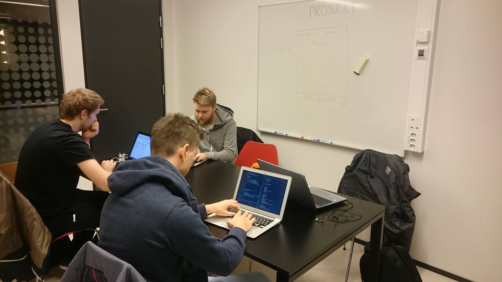

Prosjektbeskrivelse
Vårt IT-relaterte prosjekt i ING102 faget er å lage en nettside som inneholder anbefalinger av applikasjoner på diverse plattformer på mobil og PC. Etter mye diskusjon kom vi fram til at dette var et prosjekt som alle deltakerne av prosjektet var interessert i. Som følge av at vi alle bruker mange forskjellige applikasjoner daglig, falt det som en god ide å lage en nettside nettopp for å anbefale og finne fram de gode applikasjonene. Vi vil anbefale og anmelde applikasjoner på mobilplattformene Android og iOS, og på PC-plattformene Windows og macOS.
Statusrapport
Vi startet med prosjektet i uke 37 og har fram til uke 42 fått gjennomført følgende: Opprettet en ufullstendig nettside med nok back-end til å kunne skrive enkle anmeldelser. Meldingene har en unik app-id og en bruker-id som gir oss et godt oppsett. Vi har fått til et delvis fungerende CMS med mål om å kunne registrere brukere, ha god oversikt og redigere meldinger av applikasjoner på nettsiden. Vi har kommet så langt at vi har en fungerende prototype.
Et av mange gruppemøter på HiB
